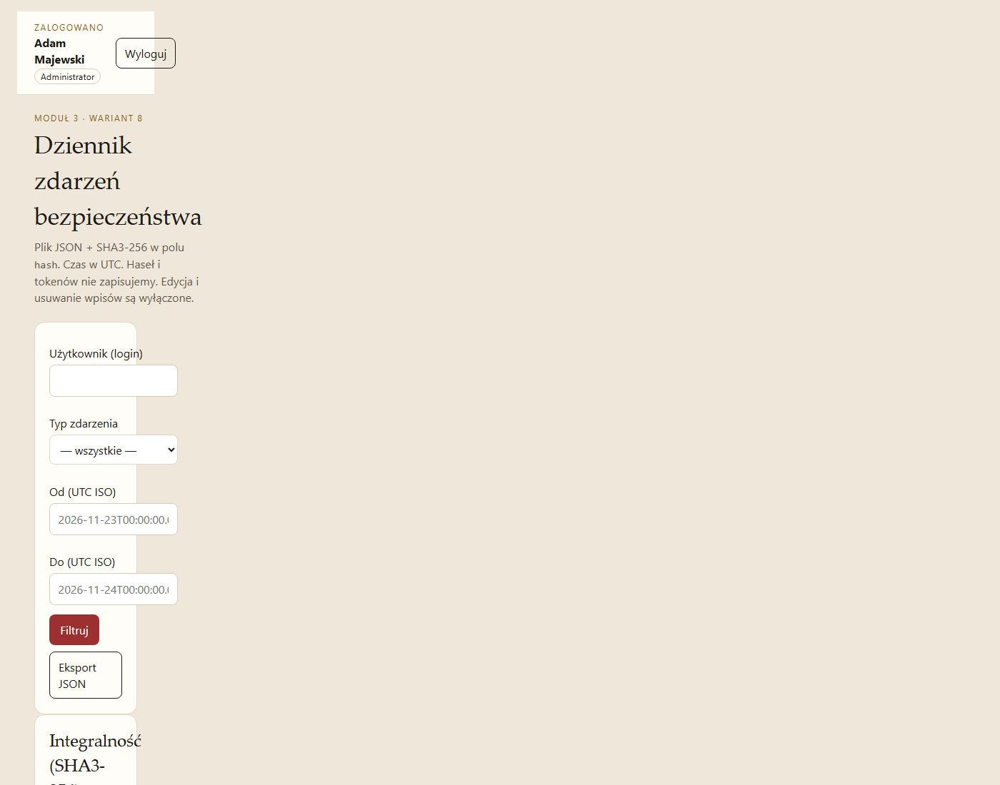
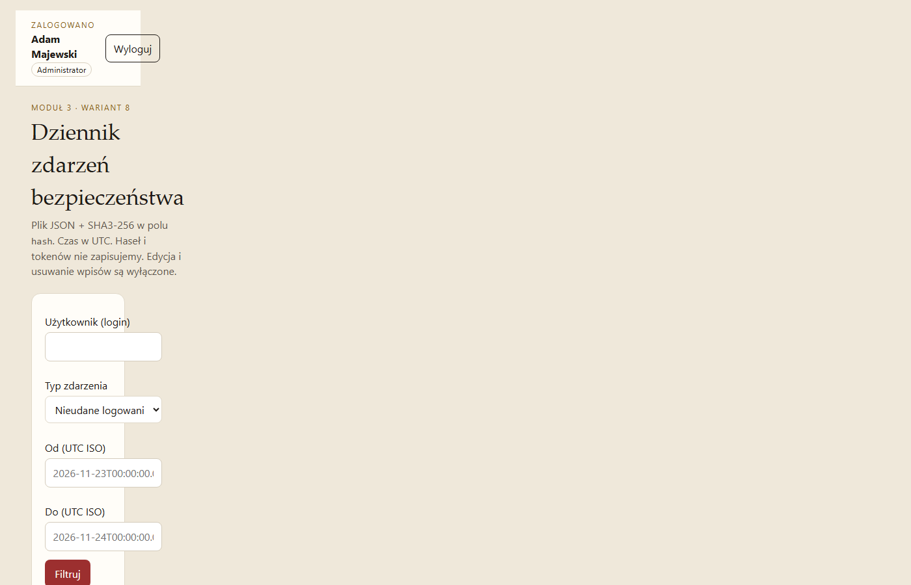
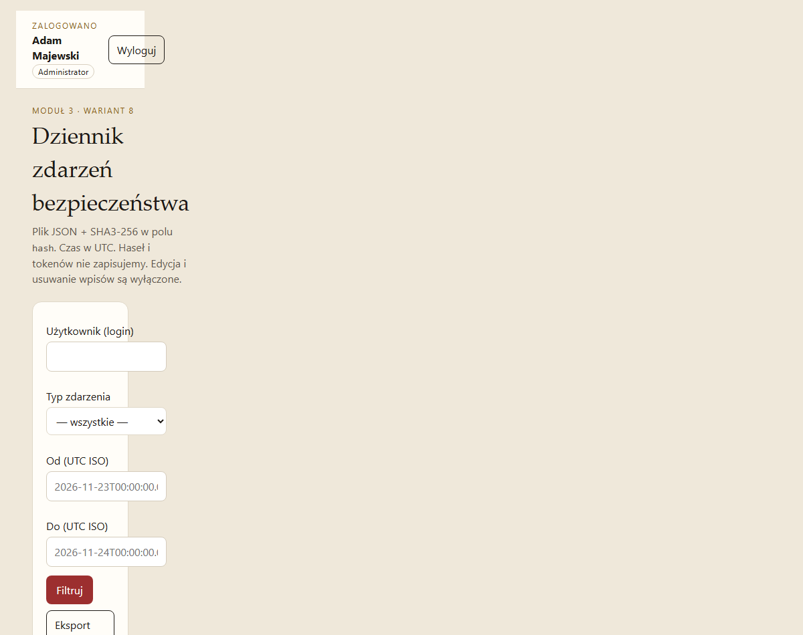
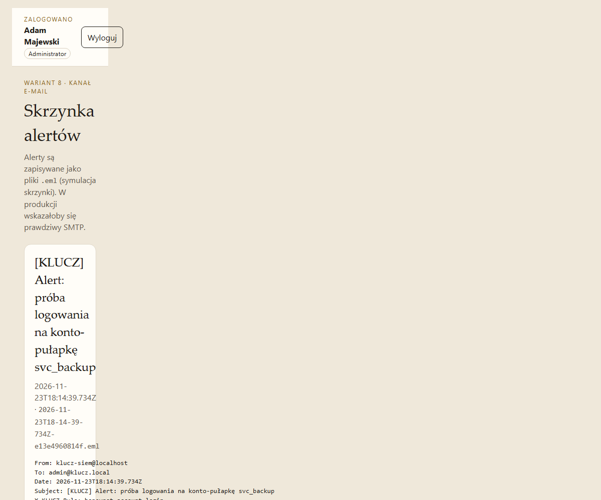
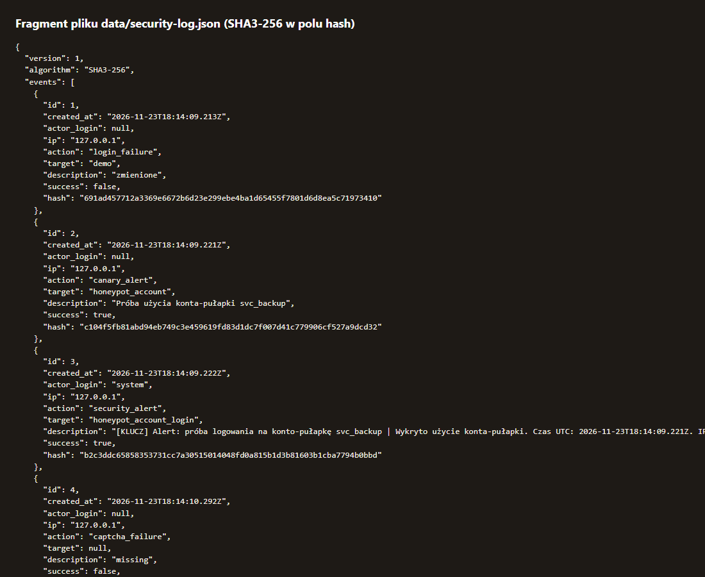

Uniwersytet Bielsko-Bialski
Wydział Budowy Maszyn i Informatyki
CYB
Lab 3
Bez dziennika zdarzeń atak zostaje tylko wrażeniem. Logi pozwalają zauważyć incydent, odtworzyć jego przebieg i rozliczyć działania użytkowników. Brak logowania i alertowania jest osobną kategorią ryzyka (m.in. OWASP Top 10); wymagania wynikają też z RODO i NIS2.
Dobry wpis odpowiada na pytania: kto, co, kiedy, skąd, z jakim skutkiem. Czas zapisuje się w UTC, żeby nie mieszać stref. W logach nie wolno trzymać haseł (także błędnych), tokenów sesji ani kluczy. Dane od użytkownika trzeba czyścić przed zapisem — inaczej log injection pozwala „wkleić” fałszywy kolejny wpis znakami nowej linii.
Integralność dziennika oznacza, że cichej edycji albo usunięcia nie da się ukryć. W tym projekcie każdy wpis w pliku JSON ma pole hash = SHA3-256 z kanonicznej treści. Ponowne przeliczenie i porównanie zdradza zmianę. Alerty (reguły detekcji) zamieniają surowe zdarzenia w sygnał dla administratora — tu kanałem jest e-mail.
| Format zapisu | plik JSON data/security-log.json |
|---|---|
| Integralność | SHA3-256 każdego wpisu w polu hash |
| Reguła detekcji | każda próba logowania na konto-pułapkę svc_backup |
| Kanał alertu | e-mail (pliki .eml w data/mailbox/) |
| Reguła wspólna | ≥ 5 nieudanych logowań na jedno konto w 5 minut |
Dodatkowo: webhook POST /webhooks/canary przekazuje alerty Canarytokens do aplikacji.
Logowanie i wylogowanie, nieudane logowania, blokady kont i IP, zmiany haseł (także nieudane), tworzenie / edycja roli / blokowanie / usuwanie użytkowników, zmiany ustawień, odmowy dostępu, honeypot, CAPTCHA, Canarytokeny, eksport dziennika i weryfikacja integralności oraz same alerty.
Przykładowy wpis:
{
"id": 12,
"created_at": "2026-11-23T18:14:40.123Z",
"actor_login": null,
"ip": "::ffff:127.0.0.1",
"action": "canary_alert",
"target": "honeypot_account",
"description": "Próba użycia konta-pułapki svc_backup",
"success": true,
"hash": "a1b2… (SHA3-256)"
}
Administrator przegląda dziennik z filtrem (login, typ, zakres dat UTC) i eksportuje JSON. Aplikacja nie udostępnia edycji ani usuwania wpisów; rejestrowania nie da się wyłączyć. Eksport i weryfikacja też trafiają do dziennika.
Weryfikacja przelicza SHA3-256 każdego wpisu i sprawdza ciągłość id. Po ręcznej zmianie opisu w pliku JSON panel zgłasza ingerencję i numer wpisu.
export function hashEvent(event) {
return createHash('sha3-256')
.update(eventPayload(event), 'utf8')
.digest('hex');
}





Zbieranie, normalizacja, retencja, wyszukiwanie i korelacje to duży, dojrzały problem. Gotowe biblioteki logujące i systemy SIEM (Wazuh, Elastic, Splunk) mają parsery, skalowanie, role, alerty i audyt dostępu do samych logów. Własny system szybko staje się dziurawy: brak rotacji, utrata zdarzeń przy awarii, słabe zapytania, brak korelacji między hostami. Na zajęciach wystarczy solidny dziennik aplikacji; w produkcji podłącza się go do SIEM zamiast pisać SIEM od nowa.
Błędne hasło często różni się od właściwego o literówkę. Zapis w logu oznacza wyciek niemal-hasła do pliku czy backupu, dostępnego dla adminów, backupów i ewentualnego napastnika z dostępem do logów. To też naruszenie zasady minimalizacji danych. W KLUCZU zapisujemy fakt nieudanego logowania i login-cel, nigdy treść hasła.
Gdy aplikacja wstawia do logu surowy tekst od użytkownika (np. login lub parametr URL) bez oczyszczenia, napastnik może wstrzyknąć znaki nowej linii i sformatować „kolejny” wpis, który wygląda jak autentyczny. Fałszuje to audyt. Ochrona: sanityzacja (usuwanie CR/LF), strukturalny format (JSON z polami), ewentualnie długość i dozwolony alfabet.
Każdy wpis ma hash = SHA3-256(id|czas|aktor|IP|akcja|cel|opis|sukces). Weryfikacja liczy skrót od nowa; niezgodność oznacza zmianę treści. Brak kolejnego id sugeruje usunięcie. Obejście: atakujący z prawem zapisu do pliku mógłby zmienić treść i przeliczyć hash, albo podmienić cały plik na spójną wersję bez niewygodnych wpisów. Dlatego integralność aplikacji trzeba uzupełnić ochroną pliku (uprawnienia OS, tylko-do-dopisywania, zewnętrzny SIEM/WORM, podpis poza serwerem aplikacji).
Moduł 1 zbudował tożsamość: Argon2id, RBAC, sesje. Moduł 2 utrudnił automatyzację: limity, reCAPTCHA, honeypot, Canarytokeny. Moduł 3 domyka pętlę: zdarzenia są trwale zapisane, da się je filtrować i eksportować, a SHA3-256 oraz alerty e-mail pokazują, kiedy ktoś rusza dziennik albo pułapkę. Całość to lokalny portal zajęciowy — do produkcji brakuje TLS, prawdziwego SMTP/SIEM i twardych uprawnień do pliku logów — ale ścieżka od logowania do alertu jest kompletna.
https://github.com/meteo1939/CYB_lab — foldery lab1/, lab2/, lab3/.